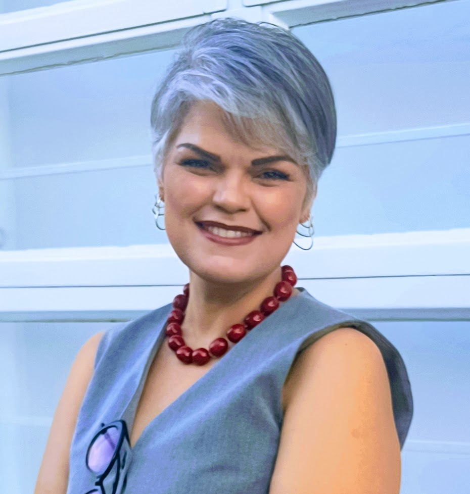

Certificação PROLIBRAS
Certificada pelo PROLIBRAS — Exame Nacional de Certificação em Libras (MEC/INEP-UFSC), programa pioneiro de proficiência em tradução e interpretação da Língua Brasileira de Sinais.
Noemi Provvidenti
Desde 1995, minha trajetória tem sido marcada por dedicação, competência e compromisso com a inclusão — atuando como ponte entre mundos para a comunidade surda.

Noemi Provvidenti atua como intérprete e tradutora de Libras com trajetória iniciada em 1995, consolidada pela certificação PROLIBRAS em 2006 — programa pioneiro de certificação em Língua Brasileira de Sinais — e por décadas de trabalho contínuo em contextos corporativos, educacionais e culturais.
"Atuo como ponte entre mundos, garantindo que a comunicação seja acessível, respeitosa e eficaz para a comunidade surda."
Em 1998, realizou interpretação destinada a uma pessoa com deficiência visual e auditiva — experiência que reforça o compromisso com acessibilidade comunicacional em todas as dimensões.
Em 2026, conclui a pós-graduação em TILS — Tradutor e Intérprete de Libras na Faculdade Metropolitana, ampliando a formação acadêmica e profissional.
Certificada pelo PROLIBRAS — Exame Nacional de Certificação em Libras (MEC/INEP-UFSC), programa pioneiro de proficiência em tradução e interpretação da Língua Brasileira de Sinais.
Tradutor e Intérprete de Libras (TILS) — Faculdade Metropolitana, complementando mais de três décadas de prática profissional.
Começo da atuação como intérprete e tradutora de Libras.
Interpretação para pessoa com deficiência visual e auditiva.
Aprovação na certificação PROLIBRAS — habilitação de proficiência em tradução e interpretação de Libras.
Trabalho regular com empresas, instituições públicas, educação e cultura.
Tradutor e Intérprete de Libras — Faculdade Metropolitana.
Interpretação e tradução para tornar sua mensagem acessível em Libras — presencialmente ou online.
Presencial e online para eventos, reuniões, palestras, workshops e formações.
Congressos, lives, encontros corporativos e ações de inclusão com equipe experiente.
Conteúdo em vídeo com interpretação em Libras para canais digitais e campanhas.
Tradução e revisão de materiais acessíveis em Português–Libras.
Apoio em contextos bilíngues que exigem ponte entre inglês e Libras.
Orientação para práticas inclusivas de comunicação e acessibilidade linguística.
Organizações e projetos que já contaram com os serviços da Inclusiva - Processos e Treinamentos:
Interpretação em ambiente jurídico e institucional.
Eventos e comunicação institucional acessível.
Treinamentos, palestras e capacitações.
Eventos corporativos e programas de inclusão.
Interpretação em evento sobre tecnologia e educação.
Vivência SESC com Flávia Mariano e Renato Frosch — 30 anos do Clube do Pedal.
Estratégia Pessoal — Conectando e Raízes com Elas.
Arte com acessibilidade em Libras.
Feira internacional do setor gráfico.
Tradução e interpretação bilíngue para conteúdos internacionais.
Telefone: +55 11 97963-1676
E-mail: nprovvidenti@gmail.com
Instagram: @librastrad
LinkedIn: noemi-provvidenti